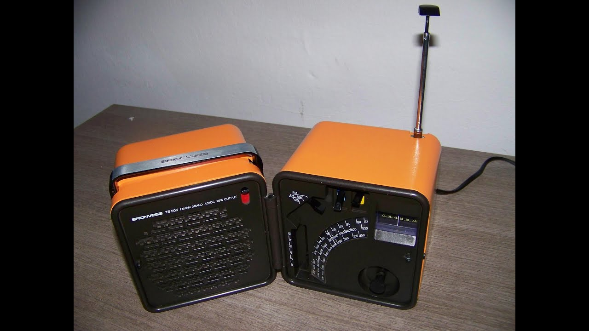

Hardware e riparazioni
 Pagina iniziale Supporto Tutte le categorie Tutte le categorie Account PS Store e rimborsi Hardware e riparazioni Sicurezza online
Pagina iniziale Supporto Tutte le categorie Tutte le categorie Account PS Store e rimborsi Hardware e riparazioni Sicurezza online
Hardware e riparazioni
Hardware e riparazioni
Come possiamo aiutarti?
PS5
PS4
PS VR
Accessori
PS Vita
PS3
Sei pronto per iniziare la tua esperienza con PS5?
Configurare la tua nuova PlayStation®5 è il primo passo da compiere.
Configurazione di PS5Supporto approfondito per i sistemi PlayStation®
Strumenti self-service online per risolvere problemi o tenere traccia di una richiesta.
Fix & Replace Monitora la tua richiesta di riparazioneEspellere un disco
Come rimuovere in modo sicuro un disco bloccato dalla tua PS4.
Scopri come espellere un discoPossiedi un visore PS VR?
Richiedere un adattatore per PlayStation Camera è facilissimo.
Richiedi un adattatoreModalità provvisoria
Molti problemi possono essere risolti utilizzando la modalità provvisoria.
Ulteriori informazioni sulla modalità provvisoriaStai cercando manuali per prodotti PlayStation?
Trova il manuale online per il tuo sistema PlayStation.
Manuali online GaranzieMigliora la tua connessione PlayStation
Trova assistenza per problemi di accesso e connessione.
Fix & ConnectRisolvere i problemi della tua PS4 prima di richiedere un intervento di riparazione
Risolvi i problemi utilizzando la modalità provvisoria di PlayStation®4
Torna in altoHai bisogno di aiuto?
Contatta i nostri addetti all'assistenza
Contatta l Assistenza PlayStation Country / Region: Italy Supporto Informativa sulla privacy e sui cookie Termini di utilizzo del sito Web PlayStation Studios Termini legali Chi siamo PlayStation e l ambiente Termini di servizio di PSN Termini di annullamento del PS Store Avvertenze per la salute Classificazioni per età Termini d uso del Software Lavora con PlayStation Mappa del sito Facebook Twitter YouTube InstagramWebsite ©2021 Sony Interactive Entertainment Europe Limited. Tutti i contenuti, nomi dei giochi, nomi commerciali e/o di abbigliamento, marchi registrati, grafica e immagini associati sono marchi registrati e/o materiale protetto da copyright dei rispettivi proprietari. Tutti i diritti riservati. Maggiori info
Torna a PlayStation Limitazione di etàHardware e riparazioni
Inserisci la data di nascita
MM GG AAAA Inserisci una data valida Conferma età Accedi Accedi al tuo account Sony e la prossima volta ci ricorderemo della tua età. Torna a PlayStation Limitazione di etàSpiacenti, non soddisfi i requisiti necessari per visualizzare questi contenuti.
Torna a PlayStation.com.